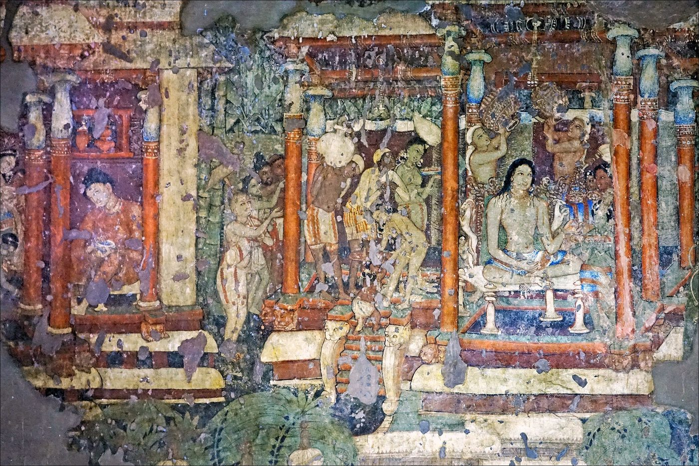

Chapter 5: Rājadharma: Kingship in the Epics and the Śāstras¶
Arthaśāstra 1.19.34
prajāsukhe sukhaṃ rājñaḥ prajānāṃ ca hite hitam
nātmapriyaṃ hitaṃ rājñaḥ prajānāṃ tu priyaṃ hitam
“In the happiness of his subjects lies the king’s happiness, in their welfare his welfare. The king’s good is not what pleases himself; his good is what pleases his subjects.”
Rājadharma, “the dharma of the king”, is the name the Brahmanical tradition gave to its teaching on kingship. It is found in the Dharmasūtras and Dharmaśāstras, which devote a chapter or more to the king; in the Arthaśāstra, which treats the king’s duties from the standpoint of policy; and above all in the two Sanskrit epics, whose heroes are kings and whose long didactic sections are among the richest sources for Indian political thought. This chapter examines how these texts explained the origin of kingship, what they required of kings, what they thought about the limits of royal power, and how kings themselves presented their rule. It follows the texts closely, because the subject has suffered from two kinds of distortion: a romantic one, which turns rājadharma into a doctrine of constitutional monarchy and welfare government, and a dismissive one, which reduces it to priestly legitimation of despotism. Neither does justice to sources that combine high ideals of protection and justice with an uncompromising defence of social hierarchy and royal coercion.
5.1 The Origin of Kingship¶
5.1.1 The “Law of the Fish”¶
The most widespread Indian account of why kings exist begins with the image of mātsyanyāya, “the law of the fish”, in which the big fish eat the small. The Arthaśāstra states it in a definition of the function of punishment: “For when the rod is not used, it gives rise to the law of the fish; for the stronger swallows the weaker in the absence of a wielder of the rod” (AŚ 1.4.13–14). The Manusmṛti uses a related image: “If the king did not tirelessly inflict punishment on those who deserve it, the stronger would roast the weaker like fish on a spit” (Manu 7.20). Kingship, on this view, exists because human beings left to themselves would destroy one another; the king’s coercive power (daṇḍa) is the remedy.
5.1.2 The Divine Creation of the King¶
The Manusmṛti couples this argument from necessity with a theology of kingship. “When this world was without a king and people fled in all directions out of fear, the Lord created a king for the protection of this whole world” (arājake hi loke ’smin sarvato vidrute bhayāt / rakṣārtham asya sarvasya rājānam asṛjat prabhuḥ, Manu 7.3). He made him from eternal particles of Indra, the Wind, Yama, the Sun, Fire, Varuṇa, the Moon and Kubera, the guardians of the world; therefore the king surpasses all beings in splendour (7.4–5). “Even a boy king must not be disregarded as a mere human; he is a great deity in human form” (7.8). The king is to be feared as fire; whoever hates him perishes (7.9–12).
This passage has often been called a “divine right” theory. The comparison with early modern Europe is loose, but the text plainly makes the king’s person sacred and obedience to him a religious duty. It is balanced, in the same chapter, by the insistence that the king himself is subject to daṇḍa: punishment “destroys the king who deviates from dharma, together with his relatives” (7.28).
5.1.3 The Mahābhārata’s Narratives¶
The Śānti Parvan (Book 12) of the Mahābhārata contains the fullest narratives. In 12.59, Yudhiṣṭhira asks Bhīṣma how the word rājan arose, and Bhīṣma begins: “At first there was no kingdom and no king, no rod and no wielder of the rod; all creatures protected one another by dharma alone” (naiva rājyaṃ na rājāsīn na daṇḍo na ca dāṇḍikaḥ / dharmeṇaiva prajāḥ sarvā rakṣanti ca parasparam, 12.59.14). But in time people grew weary of this mutual protection; delusion, greed and desire overtook them, the Veda and dharma perished, and the gods, alarmed, went to Brahmā. Brahmā composed a vast treatise on dharma, artha and kāma, which was then abridged in turn by Śiva, Indra, Bṛhaspati and Kāvya (Uśanas), and a series of rulers was created. One of them, Vena, was a tyrant who was killed by the seers; from his body they produced Pṛthu, who swore to protect the earth and to uphold dharma and the rule of the rod, and to keep the Brahmins exempt from punishment. Because he “delighted” (rañjita) the people, he was called rājan.
A second narrative, in 12.67, comes closer to what modern readers call a contract. People living without a king made agreements (samaya) among themselves to expel anyone who was violent, harsh of speech, adulterous or a thief; when this failed, they went to Brahmā and asked for a lord. Brahmā appointed Manu, who was reluctant to rule people who always behave falsely. The people promised him a share of their cattle, gold and grain and the service of their best warriors, and that a portion of the merit they earned would go to him; Manu then accepted and went about subduing evildoers.
Scholarly Note: Is This a “Social Contract”?
Modern scholars have often compared the Mahābhārata’s story of Manu (12.67), the Buddhist story of the “Great Elect” (Mahāsammata, Chapter 8) and the Arthaśāstra’s story told by spies (below) with the social contract theories of Hobbes, Locke and Rousseau. The texts themselves, however, do not develop a theory of contract. In the Brahmanical versions kingship is instituted by the creator god, and the people’s “agreement” consists in accepting a king and paying him; nothing in these stories gives the people a right to revoke the arrangement or to judge the king’s performance. The Buddhist story is different in emphasis, since its first king is chosen by the people, but it too is a myth of origins, not a constitutional doctrine (Spellman 1964; Drekmeier 1962; Collins 1993).
5.1.4 The Arthaśāstra’s Use of the Myth¶
The Arthaśāstra shows how such stories could be put to political use. In a chapter on controlling factions in the king’s own territory (AŚ 1.13), it recommends that secret agents, posing as quarrelling travellers, discuss the king’s merits in public places. When one complains of taxes and fines, the other is to tell the story: people oppressed by the law of the fish made Manu Vaivasvata their king and allotted him one-sixth of their grain and one-tenth of their merchandise, as well as money, as his share; in return kings provide security; those who do not pay taxes and accept punishment are therefore guilty of ingratitude, and the king, who holds the place of Indra and Yama, rewards and punishes visibly. The text is explicit that this is propaganda, spread by agents to secure obedience. It is a reminder that in the Arthaśāstra, theories of legitimacy are instruments of rule.
5.2 The King’s Duties¶
5.2.1 Protection¶
All the texts agree that the king’s first duty is protection (rakṣaṇa, pālana) of his subjects. “The highest dharma of a Kṣatriya is the protection of his subjects; a king who enjoys the rewards specified [i.e. taxes] is bound to dharma” (Manu 7.144). Taxes are, in many passages, the king’s wages for protection, and a king who takes taxes without protecting incurs the sins of his subjects. Protection covers defence against external enemies, the suppression of thieves and robbers, and the punishment of wrongdoers — what the Arthaśāstra calls the “removal of thorns” (Chapter 14).
5.2.2 Yogakṣema¶
The Arthaśāstra describes the function of daṇḍa as securing the yogakṣema — the acquisition (yoga) and safe possession (kṣema) of good things — of the other sciences: it is “the means of acquiring what has not been acquired, preserving what has been acquired, augmenting what has been preserved, and bestowing what has been augmented on worthy recipients” (AŚ 1.4.3). The word yogakṣema came to mean general welfare and security, and it is the motto of the Life Insurance Corporation of India; but in the Arthaśāstra it is a technical description of what coercive power does for the economy and for knowledge.
The texts do impose on the king obligations that a modern reader would call welfare duties. The Arthaśāstra (2.1) requires the king to maintain children, the aged, the sick and the helpless who have no one to support them, and to remit taxes and supply seed and cattle to farmers in distress; it gives detailed advice on famine relief, including distributing seed and food from the royal stores and undertaking public works so that people can earn food (AŚ 4.3). The Mahābhārata praises the king who feeds the hungry, protects widows and orphans and digs tanks and wells. The injunctions recur from text to text, and inscriptions show kings claiming to have met them. What they do not amount to is a “welfare state”: they create no rights in the subjects, they are owed above all to the king’s own “protected” population, and in the Arthaśāstra they sit alongside policies designed to extract the maximum revenue consistent with keeping the population from revolt.
5.2.3 Justice¶
The king is the supreme judge. The Dharmaśāstras require him to decide lawsuits each day, either in person or through a learned Brahmin judge, with Brahmin assessors, and to follow the rules of procedure and the law of the texts (Manu 8.1–3; Chapter 12). The Arthaśāstra says that the king’s own dharma, protecting his subjects in accordance with dharma, leads him to heaven, while one who does not protect, or who inflicts unjust punishment, goes to hell (AŚ 3.1). A notable principle of the Manusmṛti makes the king liable to punishment himself: “Where an ordinary man would be fined one kārṣāpaṇa, the king shall be fined one thousand; that is the settled rule” (Manu 8.336). Who could impose such a fine on the king is not said; the commentators explain that the king should pay it himself, by throwing it into water or giving it to Brahmins. The rule expresses the principle that the king is not above the law of dharma, while also showing that no human institution was given the power to enforce it against him.
5.2.4 Upholding Varṇa and Āśrama¶
The duty that the texts themselves stress most is one that modern summaries often leave out: the king must ensure that each varṇa and each stage of life keeps to its own dharma. The Arthaśāstra lists the “own duties” (svadharma) of the four varṇas — the Śūdra’s being service of the twice-born, and also crafts and trade — and declares that the world, “in which the bounds of Ārya conduct are fixed and the varṇas and āśramas are firmly established, prospers and does not perish” when protected by the triple Veda (AŚ 1.3) — an order that it is the king’s task to maintain. The Manusmṛti makes the king responsible for compelling Vaiśyas and Śūdras to perform their duties, “for if they deviated from their duties, they would throw this world into confusion” (Manu 8.418). The king’s daṇḍa therefore enforced the hierarchy of varṇa as well as protecting persons and property. Chapters 10 and 14 discuss what this meant in law.
The Rāmāyaṇa contains a stark narrative expression of this duty. In its last book (Uttarakāṇḍa), a Brahmin’s son dies young, and Rāma learns that the cause is a Śūdra, Śambūka, performing austerities that are not permitted to his varṇa; Rāma seeks him out and beheads him, and the boy is restored to life. The episode, generally regarded as a late addition to the epic, was criticised already in classical times by the dramatist Bhavabhūti, who in his Uttararāmacarita makes Rāma express revulsion at the deed, and it has been a focus of modern Dalit and reformist criticism of the ideal of “Rāmarājya”.
5.2.5 Protection of Brahmins and Religious Institutions¶
The texts require the king to honour and support Brahmins, to exempt learned Brahmins from taxation, never to execute a Brahmin, and to make gifts to them and to religious institutions. Inscriptions show that kings across India, of all religious affiliations, did make such gifts on a large scale — land grants to Brahmins and temples, and endowments to Buddhist and Jain monasteries. The relation between king and Brahmin was presented as one of mutual dependence: the Brahmin’s sacred power (brahman) and the king’s ruling power (kṣatra) together sustain the world, but the texts insist that the Brahmin is the superior partner (Heesterman 1985).
5.3 The King’s Self-Discipline¶
Every tradition of rājadharma treats the king’s character as decisive. The Arthaśāstra’s first book teaches the conquest of the senses and the avoidance of the “six enemies” — lust (kāma), anger (krodha), greed (lobha), pride (māna), arrogance (mada) and excessive exhilaration (harṣa) — giving for each the example of a legendary king destroyed by it (AŚ 1.6). The Manusmṛti lists ten vices born of desire (hunting, gambling, sleeping by day, slander, women, drunkenness, music, singing, dancing and idle wandering) and eight born of anger (calumny, violence, malice, envy, fault-finding, destruction of property, verbal abuse and assault), and calls drink, gambling, women and hunting the worst (Manu 7.45–52). The king’s routine (Chapter 3) is designed to keep him at work and accessible; the Arthaśāstra warns that a king who keeps petitioners waiting at his door is made to do the opposite of what he should by those around him, and provokes the anger of his subjects (AŚ 1.19).
5.4 Coronation, Chaplain and Council¶
5.4.1 Consecration¶
Kingship was conferred and renewed through rites of consecration (abhiṣeka). The Vedic rājasūya and the “great consecration of Indra” (aindra mahābhiṣeka) described in the Aitareya Brāhmaṇa (Book 8) include an oath sworn by the king — not to the people but to the officiating priest: should he injure the priest, may the priest take away all the merit of his sacrifices and gifts, his heaven, his life and his offspring, from the night of his birth to the night of his death. Later coronations combined Vedic and Purāṇic elements: the sprinkling with waters from sacred rivers and with substances such as milk, curd and honey; the investiture with the royal umbrella, fly-whisk and throne; and the acclamation of ministers and subjects. Some medieval digests set out the rites in detail. The acclamation was a ritual act, not an election (Gonda 1966; Heesterman 1985). Figure 5.1 shows a palace scene from an Ajanta mural.


5.4.2 The Chaplain¶
Every royal court had a purohita, a domestic chaplain who performed the king’s rituals and advised him. The Arthaśāstra requires the king to appoint a chaplain of high family and character, learned in the Veda, in omens and in the science of government, and to follow him “as a pupil his teacher, a son his father, a servant his master”; “kṣatra power made to prosper by the Brahmin, consecrated by the counsel of counsellors, and armed with weapons in accordance with the śāstra, conquers the unconquered” (AŚ 1.9). It is sometimes said that the purohita was a constitutional check on the king. He was a powerful figure and could be a moral counsellor, but he was appointed and could be dismissed by the king, and the Arthaśāstra’s own test of ministers (Chapter 4) begins with a staged dismissal of the chaplain. His influence was personal and religious, not institutional.
5.4.3 Council¶
The Arthaśāstra and the Manusmṛti both require the king to consult his ministers before acting and to deliberate in secret (Manu 7.54–59; AŚ 1.15). The Mahābhārata repeatedly shows kings consulting councils of elders and ministers, and the Rāmāyaṇa’s famous “kaccit” chapter in the Ayodhyākāṇḍa, in which Rāma questions his brother Bharata about the government of Ayodhyā (“Do you take counsel neither alone nor with too many? Do you appoint ministers who are honest and tested? Do you pay your soldiers on time?”, 2.94.13, 21, 26), is a compact handbook of rājadharma in the form of questions. In all these texts, however, the final decision rests with the king.
5.5 Rājadharma in the Epics¶
5.5.1 The Mahābhārata¶
The Mahābhārata, composed over several centuries (c. 400 BCE–400 CE), is in part a long meditation on kingship. Its central plot turns on disputed succession, the ruin of a dynasty by a gambling match and the moral costs of a war fought for a kingdom. After the war, Yudhiṣṭhira, the new king, is overwhelmed by grief and wants to renounce the throne; he is persuaded to rule, and the dying Bhīṣma instructs him in the duties of a king. This instruction fills most of the Śānti Parvan, whose first two sections are the Rājadharma (12.1–128; Bhīṣma’s teaching begins at 12.56) and the Āpaddharma, “dharma in times of distress” (12.129–167), followed by the Mokṣadharma on liberation (12.168–353). The Anuśāsana Parvan (Book 13) continues the instruction (Fitzgerald 2004).
The Rājadharma sections cover much of the ground of the Arthaśāstra — the origin of kingship, the qualities of king and ministers, taxation, the treasury, spies, diplomacy and war — but in a more varied and often more troubled voice. Bhīṣma tells Yudhiṣṭhira that the king’s dharma is the foundation of all other dharmas, because without protection none can be practised; he also teaches that a king must sometimes be harsh and must use deceit against the deceitful. James Fitzgerald has emphasised that the Śānti Parvan addresses the problem of royal violence head-on: it tries to persuade a reluctant, conscience-stricken king that the violence of rule is necessary and righteous (Fitzgerald 2004).
5.5.2 Āpaddharma: Law for Emergencies¶
The Āpaddharma section develops the idea that in emergencies the ordinary rules may be suspended. A king who has lost his treasury may take wealth from those who are not Brahmins; a Brahmin unable to live by his own occupation may live by those of the Kṣatriya or Vaiśya. The most famous illustration is the story of the sage Viśvāmitra, who during a twelve-year famine tries to steal dog’s meat from the hut of a Caṇḍāla; the Caṇḍāla argues with him about dharma, and the sage defends his act on the ground that survival comes first (MBh 12.139). The doctrine of emergency rules is found in the Dharmasūtras and Dharmaśāstras as well; it gave the tradition a principled way of accommodating necessity without abandoning its norms.
5.5.3 The Bhagavad Gītā and the Duty of the Warrior¶
The most famous discussion of a ruler’s duty in Indian literature is the Bhagavad Gītā, set in the Mahābhārata at the beginning of the great battle. Arjuna, seeing his kinsmen and teachers in the opposing army, refuses to fight; Kṛṣṇa persuades him to do so. Among his arguments is the appeal to the warrior’s own duty: “for a Kṣatriya there is nothing better than a battle in accordance with dharma” (BG 2.31), and “better one’s own duty, though imperfect, than another’s duty well performed” (BG 3.35). Kṛṣṇa declares that he created the four varṇas according to the division of qualities and actions (BG 4.13), and later lists the duties of each varṇa, ending with service as the duty of the Śūdra (BG 18.41–44). The Gītā’s teaching that one should act without attachment to the fruits of action gave the doctrine of svadharma a new philosophical depth.
The Gītā has been read in very different ways. Classical commentators such as Śaṅkara (c. 700–750 CE; traditional dates 788–820) read it as a text about liberation through knowledge. In the national movement it became a text of political action: Bal Gangadhar Tilak’s Gītā Rahasya (1915) read it as a gospel of energetic, selfless action in the world, and Gandhi read it as a teaching of non-violent, detached service, interpreting its battle allegorically. Ambedkar, by contrast, criticised the Gītā as a defence of the varṇa order and of the duty to kill. These readings show how a classical text about the duty of a warrior-prince could be made to speak to modern politics.
5.5.4 The Rāmāyaṇa and “Rāmarājya”¶
Vālmīki’s Rāmāyaṇa presents Rāma as the ideal king: obedient to his father, faithful to his word, self-controlled, protective of his people. Its descriptions of Ayodhyā under Rāma’s rule — free from disease, untimely death, widowhood, theft and fear, with everyone content in his own dharma — created the ideal of Rāmarājya, “the rule of Rāma”, which has served for two millennia as a byword for good government. The same text shows a king who, in the Uttarakāṇḍa, banishes his pregnant wife because of popular gossip about her chastity, and who executes Śambūka. Modern uses of Rāmarājya, from Gandhi’s ideal of a just and non-violent polity to its use in contemporary politics, are discussed in Chapter 20.
5.5.5 The King Makes the Age¶
A recurring theme of the Śānti Parvan is that the king is responsible for the moral condition of his time. Bhīṣma asks whether time is the cause of the king or the king the cause of time, and answers that the king is the cause of the age: when the king rules fully according to the science of punishment, the age is the Kṛta, the age of perfection; when he abandons it, the age becomes the Kali (MBh 12.70). The idea, which reverses the usual relation between cosmic time and human action, gave the king’s conduct a cosmic weight and made bad times a judgement on bad rulers. It is echoed in the widespread belief, found in many texts and inscriptions, that a righteous king brings timely rain and abundant harvests, and an unrighteous one brings famine.
5.6 Succession and Regency¶
The texts assume that kingship passes from father to son, and that the eldest son is the proper heir. The Arthaśāstra, after discussing at length the dangers that princes pose to their fathers (Chapter 4), commends succession by the eldest son except in calamity, and considers what should be done when the king has no fit son: a son begotten on the queen by a kinsman, a daughter’s son, or a prince of the royal family might be installed, and the ministers must manage the transition, if necessary concealing the king’s death, so that the kingdom is not exposed to its enemies (AŚ 1.17; 5.6) — a measure of the vulnerability of every succession.
The epics turn on disputed successions. In the Rāmāyaṇa, King Daśaratha’s decision to consecrate his eldest son Rāma as heir apparent is overturned by the boons he owes to his queen Kaikeyī, who demands the throne for her own son Bharata and the exile of Rāma; Bharata refuses to accept the throne and rules as regent in Rāma’s name, placing Rāma’s sandals on the throne. In the Mahābhārata, Dhṛtarāṣṭra is passed over in favour of his younger brother Pāṇḍu because of his blindness, and the rival claims of their sons lead to the great war. Both epics thus present the rule of primogeniture as normative and explore the moral crises that arise when it is challenged.
Historical practice was more varied. Kings often designated their heirs during their lifetime, sometimes passing over elder sons: the Allahabad inscription describes Candragupta I embracing Samudragupta before the assembled court and choosing him as his successor, and several Cōḷa kings associated their chosen heirs with them as heir apparent (yuvarāja) years before their deaths. Wars of succession were common in many dynasties; among the Mughals, who did not follow primogeniture, the sons of a dying emperor regularly fought for the throne, as in the war of 1657–58 from which Aurangzeb emerged victorious (Chapter 18). Queens and ministers frequently acted as regents for minor kings, and some women, such as the Vākāṭaka queen Prabhāvatīguptā and the Kashmiri queen Diddā, wielded royal power in this way for long periods (see below). The gap between the ideal of orderly succession and the frequency of disputed thrones is one reason why the texts insist so strongly on the protection of the king’s person.
5.7 Kings, Temples and Gods¶
From about the seventh century, the relationship between kings and temples became a central feature of Indian kingship, especially in the south. Kings built great temples to the gods they worshipped, endowed them with land and revenues, and associated their own names with the deity. The Rājarājeśvara (Bṛhadīśvara) temple at Thanjavur, completed by the Cōḷa king Rājarāja I in about 1010, bears inscriptions recording the king’s gifts, the villages assigned to the temple’s support, and the hundreds of persons — priests, musicians, dancers, accountants, watchmen and craftsmen — employed in its service. Such temples were centres of redistribution as well as of worship, and through them kings bound together the Brahmins, merchants and landholders of their realms (Nilakanta Sastri 1955).
In some kingdoms the king presented himself as the servant or deputy of a god who was the true sovereign. The Vijayanagara kings issued their grants in the presence of the god Virūpākṣa at Hampi, whose name appears on their records. In Odisha, the Gajapati kings represented themselves as servants of Jagannātha at Puri and, at the annual chariot festival, ritually sweep the path before the god’s chariot, a rite still performed by the titular king. In Travancore, Mārttāṇḍa Varma dedicated his kingdom to the deity Padmanābha in 1750 and ruled thereafter as the god’s servant (padmanābhadāsa). These arrangements gave religious legitimacy to royal power while also placing it, in principle, under a higher authority.
Kings were also expected to protect and regulate temples. Inscriptions record royal orders settling disputes among temple servants, punishing the misappropriation of temple funds and confirming the rights of temple assemblies. This royal role in the administration of religious institutions was inherited by the colonial state and, after independence, by state governments that administer many Hindu temples through statutory boards — a development discussed in Chapter 20.
5.8 Limits on Royal Power¶
Did the classical texts recognise any limit on the king’s power? They recognised several, but of a particular kind.
-
Dharma and the śāstras. The king is to judge according to the śāstras and the customs of regions, castes and families (Manu 8.41), and he is not to alter the dharma of the varṇas. In practice, kings issued orders (rājaśāsana) freely, and the Arthaśāstra ranks royal edict highest among the bases of decision (Chapter 12).
-
Counsel. The king should deliberate with ministers and heed the purohita; a king who rejects counsel is a fool.
-
Divine and karmic sanction. The unjust king goes to hell, loses his kingdom, and brings famine and disaster on his land.
-
Deposition and resistance. Stories tell of wicked kings killed or deposed: Vena by the seers; Nahuṣa, cast down from Indra’s throne for his arrogance. The Anuśāsana Parvan contains a striking statement that a king who says “I am your protector” and does not protect should be killed by his subjects acting together, like a mad dog (MBh 13.60.19–20). Such passages provide a theoretical justification of resistance to tyranny, though they are rare and never developed into a doctrine with procedures.
What the texts do not provide is any institution with authority over the king — no court that could judge him, no assembly whose consent he required, no right of subjects to sue him. U. N. Ghoshal and R. S. Sharma, from different perspectives, both concluded that the limits on royal power in the Brahmanical theory were essentially moral and religious; Ghoshal stressed the restraining force of dharma, Sharma the role of the theory in legitimating a social order dominated by Brahmins and Kṣatriyas (Ghoshal 1959; Sharma 1959). To read rājadharma as a doctrine of constitutional monarchy or of the rule of law is to mistake moral exhortation for institutional constraint.
5.9 Women and Kingship¶
The texts of rājadharma assume a male king. The Manusmṛti excludes women, along with the sick and the foolish, from the king’s secret deliberations (7.149–150), and the Arthaśāstra treats the women of the palace chiefly as a security risk (Chapter 4). The chief queen (mahiṣī) had a ritual role in royal consecrations and sacrifices, and the Arthaśāstra places the king’s mother and chief queen in the highest salary grade (Chapter 6); but the śāstras do not discuss the possibility of a woman ruling in her own right.
History nevertheless records a number of women who exercised royal power. The Gupta princess Prabhāvatīguptā, daughter of Candragupta II, governed the Vākāṭaka kingdom as regent for her sons in the late fourth and early fifth centuries. Queen Diddā ruled Kashmir in the late tenth century, first as regent and then in her own name; Kalhaṇa’s Rājataraṅgiṇī portrays her as able and ruthless. Rudramā Devī ruled the Kākatīya kingdom of the eastern Deccan in the later thirteenth century, and the Venetian traveller Marco Polo described the kingdom under a queen. In the Delhi Sultanate, Raḍiyya (Raziya) ruled from 1236 to 1240 before being overthrown by nobles who resented a woman’s rule. In the eighteenth century, Ahilyabai Holkar governed the Maratha state of Indore for some three decades and was remembered for her patronage of temples, pilgrim routes and public works across India. These rulers were exceptions, and they usually reached power as widows or regents for minor sons; but their careers show that the śāstric assumption of male kingship was not always borne out in practice.
5.10 The King as Giver¶
One duty of rājadharma left a vast documentary record: the king’s gifts. The Dharmaśāstras praise the gift of land to Brahmins as the highest of gifts, and from the Gupta period onwards kings, queens, feudatories and officials granted villages and fields to Brahmins and temples, recording the grants on copper plates, whose form and legal force are described in Chapter 17. The charters usually end with imprecatory verses attributed to Vyāsa, the best known of which declares that whoever takes away land given by himself or by others will be born as a worm in excrement for sixty thousand years.
Historians have used these grants to study the relationship between kingship and Brahmanical authority. R. S. Sharma argued that the transfer of fiscal and administrative rights to Brahmins and temples contributed to a decentralisation of power in early medieval India, which he described as “feudal”; others have emphasised the role of such grants in extending agrarian settlement and royal legitimacy into new areas. Whatever their interpretation, the grants show rājadharma in action: the king fulfilling his duty to support Brahmins and religious institutions, and acquiring in return the legitimacy that their prayers and praise conferred (Sharma 1959; Singh 2008).
5.11 Kings in History¶
Historical kings did draw on these ideals in presenting themselves. Aśoka’s inscriptions (Chapter 8) proclaim that “all men are my children” and describe welfare works and officials appointed to promote dhamma. The Hāthīgumphā inscription of Khāravela of Kaliṅga (c. 1st century BCE), a Jain ruler, records year by year his military campaigns, his repair of waterworks, remissions of taxes and patronage of Jain ascetics. Gupta inscriptions, notably the Allahabad pillar inscription of Samudragupta (4th century CE), praise the king as a protector of the good and destroyer of the wicked, and as an equal of the gods. The Chinese pilgrim Xuanzang described the great distributions of wealth made by Harṣa (r. c. 606–647) at Prayāga. Bhoja of the Paramāra dynasty (r. c. 1010–1055) was celebrated as a scholar-king, and the Vijayanagara emperor Kṛṣṇadevarāya (r. 1509–1529) included a section of advice on statecraft in his Telugu poem Āmuktamālyada (Chapter 17).
A more critical view of kings is found in Kalhaṇa’s Rājataraṅgiṇī (1148–49), a verse history of the kings of Kashmir (see also Chapter 17). Kalhaṇa, a Brahmin poet, judged rulers by the standards of rājadharma and recorded their failures with unusual frankness: rapacious ministers, palace intrigues, the oppression of cultivators by tax-collectors, and the conduct of king Harṣa of Kashmir (r. 1089–1101), who, short of money, appointed an officer to despoil temples of their images. His work shows that the ideals of rājadharma could be used to criticise kings as well as to praise them.
These inscriptions and chronicles are self-representations, court praise or the judgements of court poets; they tell us how kings wished to be seen or how learned men thought they should behave. Inscriptions also show the realities that the texts discuss more abstractly: wars of conquest, the destruction of rival capitals, the transfer of land and its cultivators to Brahmins and temples, and the burdens of taxation and forced labour (viṣṭi) on peasants. Upinder Singh’s study of political violence in ancient India shows how the texts and inscriptions together reveal a persistent tension between the ideal of the protective king and the fact of royal violence (Singh 2017).
Comparison: Rājadharma and Other Traditions
Comparisons are often drawn with the Chinese idea of the Mandate of Heaven, under which a ruler who loses virtue loses the right to rule, and with Mencius’s justification of the removal of tyrants; with the European “mirrors for princes”; and with Machiavelli. Each brings out a different side of the Indian material. Mencius developed an explicit argument that killing a tyrant is not regicide, which the Indian texts state only occasionally; the European mirrors, like the Indian ones, combine moral counsel with practical advice; and Machiavelli shares the Arthaśāstra’s frankness about deceit, but not the epics’ preoccupation with the moral costs of rule.
5.12 The Tamil South and the Early Medieval State¶
The śāstras describe kingship from the king’s side: one ruler, his ministers and his rod. Historians who have tried to reconstruct how actual states worked, especially from the abundant poetry and inscriptions of the Tamil country, have reached a more complicated picture, and their debates are a useful test of how far the theory of rājadharma describes Indian polities.
5.12.1 Kingship in Tamil Poetry and the Kuṟaḷ¶
The Tamil literary tradition offers a distinct and early voice on kingship. The Caṅkam anthologies (c. 1st–3rd centuries CE in their core) include many poems addressed to kings, praising their generosity and martial prowess and sometimes admonishing them. A poem of the Puṟanāṉūṟu (186) declares that rice is not the life of the world, nor is water: the king is the life of the world, so a king must know that he is the life of his people. Other poems remind kings that their glory depends on their gifts to poets and on the welfare of their subjects. The Tirukkuṟaḷ’s book on polity (Chapter 4) devotes chapters to the just sceptre (ceṅkōl), which it says is the support of the Brahmins’ Veda and of dharma, and to the cruel sceptre (koṭuṅkōl), whose wielder is likened to a robber. These texts share many ideals with Sanskrit rājadharma, but they developed in a different literary culture, and they emphasise the reciprocal bond between the king and his people more than his divine status.
5.12.2 Crowned Kings and Chiefs in the Caṅkam Poems¶
Beyond these ideals, the Caṅkam anthologies show a political world of many ranks. At the top stood the three “crowned kings” (mūvēntar) — the Cēra, Cōḷa and Pāṇṭiya — called vēntaṉ, kō or maṉṉaṉ; beside and beneath them were numerous chieftains (vēḷir) and lords of hill and forest tracts; and around them all moved bards and poets (pāṇar, pulavar) who praised their patrons and expected gifts in return. The puṟam poems celebrate cattle raids, sieges and the burning of enemy lands (Chapter 7), and above all the generosity of the victor, who redistributed plunder to warriors and poets. Brahmanical kingship is present but not dominant: the Pāṇṭiya Mutukuṭumi Peruvaḻuti, for instance, is praised as a performer of many Vedic sacrifices. George Hart has examined how these poems conceive the king and how they relate to Sanskrit literature, arguing that much in them belongs to an indigenous Tamil culture rather than to a borrowed Brahmanical model (Hart 1975). Historians still disagree whether the polities of the poems were kingdoms with officials and regular land revenue, or chiefdoms held together by kinship, warfare and the circulation of gifts, in which such structures were only beginning to form.
5.12.3 The Cōḷa State: Centralised or Segmentary?¶
From the Pallavas (c. 6th–9th centuries) to the imperial Cōḷas (c. 850–1279), copper plates and temple inscriptions record land grants, royal orders, temple endowments and the decisions of local assemblies (Chapter 16). K. A. Nilakanta Sastri read this evidence as the record of a strong and centralised monarchy, with a large body of officials, royal surveys of land under Rājarāja I and Kulottuṅga I, and a hierarchy of provinces (maṇṭalam), districts (vaḷanāṭu) and localities (nāṭu), combined with vigorous village self-government (Nilakanta Sastri 1955). Burton Stein challenged this picture. Adapting the anthropologist Aidan Southall’s model of the “segmentary state”, he argued that the Cōḷa king exercised full political control only in a core around the Kāviri (Kaveri) delta, and elsewhere enjoyed a ritual sovereignty acknowledged by largely self-governing peasant localities, dominated by landholding cultivating groups allied with Brahmins and temples (Stein 1980). Noboru Karashima and Y. Subbarayalu, analysing large numbers of inscriptions systematically, found more evidence of royal intervention — in revenue assessment, in the appointment of officials and in changing patterns of landholding — than Stein allowed, and most historians now take a position between the two models (Karashima 1984).
5.12.4 Feudal, Segmentary or Integrative?¶
The southern debate is part of a wider argument about the early medieval state in India (c. 600–1200). R. S. Sharma and D. N. Jha described the period as one of “Indian feudalism”, in which grants of land and fiscal rights to Brahmins, temples and officials fragmented royal authority and bound peasants more tightly to landlords (Section 5.10). B. D. Chattopadhyaya and Hermann Kulke, among others, proposed instead an “integrative” or “processual” model: the spread of land grants, Brahmin settlements and temples carried state society into new regions and absorbed local lineages and cults into regional kingdoms, so that the same evidence records the formation of states rather than their decline (Chattopadhyaya 1994; Kulke 1995). Kulke’s own studies of Odisha, where the kings came to rule as servants of Jagannātha (Section 5.7), are a leading example.
These debates do not settle what rājadharma meant to those who professed it, but they show its limits as a description. The śāstras locate all coercive authority in the king; the inscriptions show authority shared, negotiated and ritually expressed among kings, temples, Brahmin assemblies, landholding groups and local chiefs. Rājadharma supplied the language in which that shared power was legitimated — protection, gift, the upholding of dharma — rather than a blueprint of its structure.
5.13 Principal Passages¶
Table 5.1 lists the principal passages discussed in this chapter.
| Passage | Subject |
|---|---|
| AŚ 1.4.13–14 | The “law of the fish” in the absence of punishment |
| AŚ 1.13 | Spies spread the story of Manu Vaivasvata’s election |
| AŚ 1.19.34 | The king’s happiness lies in the happiness of his subjects |
| AŚ 3.1 | The king’s own dharma; four bases of a lawsuit |
| Manu 7.3–8 | The divine creation of the king |
| Manu 7.18–28 | The praise and dangers of punishment |
| Manu 7.45–52 | The vices born of desire and anger |
| Manu 7.144 | Protection as the highest dharma of a Kṣatriya |
| Manu 8.336 | The king fined a thousandfold |
| Manu 8.418 | The king to compel Vaiśyas and Śūdras to their duties |
| MBh 12.59 | Origin of kingship; Vena and Pṛthu |
| MBh 12.67 | The people’s offer to Manu |
| MBh 12.70 | The king as the cause of the age |
| MBh 12.139 | Viśvāmitra and the Caṇḍāla |
| MBh 13.60.19–20 | A king who does not protect may be killed by his subjects |
| Aitareya Brāhmaṇa 8 | The king’s oath to the priest at consecration |
| Puṟanāṉūṟu 186 | The king as the life of the world |
| Tirukkuṟaḷ, ch. 55–56 | The just and the cruel sceptre |
5.14 Summary¶
-
Brahmanical texts explain kingship as a remedy for the “law of the fish”: without the king’s coercive power the strong would devour the weak. The Manusmṛti adds that the creator made the king from particles of the gods; the Mahābhārata tells of Pṛthu and of the people’s agreement with Manu, which confers no right to revoke the king.
-
The king’s duties were protection, justice, the welfare (yogakṣema) of his subjects, and — stressed in every text — the maintenance of the order of varṇas and āśramas. Welfare duties were enjoined, but they created no rights in the subjects.
-
Self-discipline, counsel and the guidance of the chaplain were the main checks on the king. The texts know of the deposition and even killing of tyrants, but they provide no institution with authority over the king.
-
The Mahābhārata’s Śānti Parvan is the fullest discussion of kingship, and it treats royal violence as a moral problem. The Rāmāyaṇa created the ideal of Rāmarājya, but also tells of the banishment of Sītā and the killing of Śambūka.
-
Inscriptions and chronicles show kings presenting themselves through these ideals; Tamil poetry and the Tirukkuṟaḷ offer a parallel tradition stressing the bond between king and people.
-
Historians of the Tamil south and of the early medieval state — with models of centralised, segmentary, “feudal” and integrative states — show royal authority shared with temples, Brahmin assemblies and local groups; rājadharma supplied its legitimating language rather than its structure.
Further Reading¶
On the theory of kingship see Spellman (1964), Drekmeier (1962), Gonda (1966) and Ghoshal (1959); on the social basis of political ideas, Sharma (1959); on the emergence of monarchy in the Brahmanical sources, Roy (1994). Fitzgerald (2004) translates and introduces the first part of the Śānti Parvan. Heesterman (1985) discusses the relation between king and Brahmin, and Singh (2017) the problem of royal violence. On Tamil kingship and the south Indian state see Hart (1975), Nilakanta Sastri (1955), Stein (1980) and Karashima (1984); on the early medieval state, Chattopadhyaya (1994) and Kulke (1995). The relevant primary passages are Manu chapter 7 (Olivelle 2005) and AŚ Book 1 (Olivelle 2013).